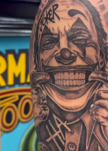
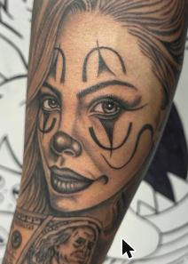
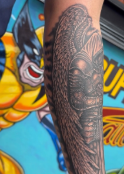
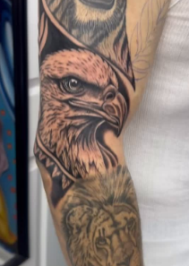
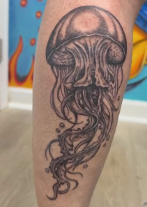
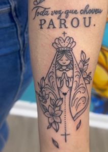

Ibraim Lagoa · tatuador internacional BR e EUA · Carolina do Sul
Tattoo preto e cinza e colorida
Fechamento de braço e perna, realismo, chicano, anime e traços delicados. Conte a sua ideia e receba uma estimativa no mesmo dia.
- Preto e cinza
- Colorida
- Realismo
- Chicano
- Anime
- Fineline
Trabalhos







Prévias de baixa qualidade. As fotos do Instagram @superman_tattoo entram aqui no projeto final, tratadas.
TATTOO
Brasileiro na Carolina do Sul
Ibraim é tatuador internacional, com trabalho no Brasil e nos Estados Unidos. Atende em português e em inglês, com hora marcada, e cuida de cada projeto do desenho à cicatrização.
Como funciona
- 1Você conta a ideia, a região do corpo, o tamanho e manda referências.
- 2Recebe uma estimativa de valor na hora e confirma o interesse.
- 3O Ibraim ajusta o desenho com você e combina data e sinal.
- 4Sessão marcada, com lembrete e cuidados pós-tatuagem.
Clientes
Depoimentos de exemplo.
Fechou meu braço com um nível de detalhe absurdo. Super profissional.
Cliente · Charleston
Passei a ideia e a referência, e o desenho ficou melhor do que eu imaginava.
Cliente · Summerville
Orçamento rápido e atendimento em português. Recomendo.
Cliente · Goose Creek
Vamos tirar a sua ideia do papel?
- Onde
- Carolina do Sul, EUA · endereço de exemplo
- Agendamento
- Pelo WhatsApp ou pelo formulário
- @superman_tattoo